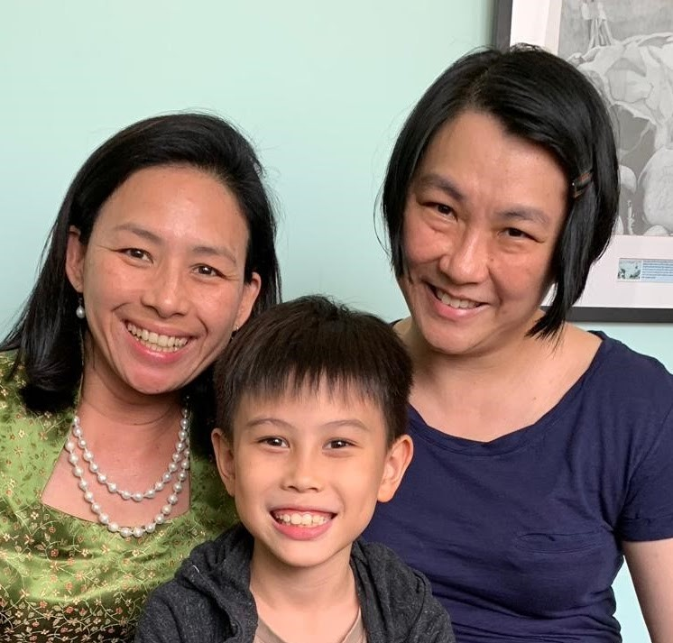

Over 20 years of experience in educational therapy
Teaching children the way they learn, not expecting them to learn the way we teach.

Our Passion
Goes beyond simply teaching a child to read or count, rather to instill a thirst for learning, and equip them not just for the next exam, but for life!
Our Mission
Is to empower parents to be their children's prime education supporters and instruments in building a genuine love for learning.
Our Aim
Is to get to know each child as an individual and to provide for his/her total development academically, socially and emotionally.
About
us
Julene founded Learning Hearts Therapy almost 20 years ago, teaching a handful of young children in her home 'Montessori' balcony. Then, an endearing little boy with ASD came to her for help, igniting a special calling in teaching... and the rest is history.
The programme at Learning Hearts Therapy is the by-product of her genuine passion for, and in-depth experience in the area of foundational reading & numeracy development.
Training, experience & connection with children
Julene finds the greatest challenges and satisfaction in helping children with learning difficulties, either due to their background or pre-existing disabilities. She has worked with children with mild ASD, ADHD, Dyslexia, Dyspraxia, SLI; as well as those from broken, troubled and disadvantaged backgrounds.
Julene has a firm belief in the transfer of knowledge to all people who work with and nurture children; hence the many workshops she has conducted for both teachers and parents, to empower them to help children acquire critical reading and numeracy strategies.
Julene was, for over 10 years, the in-house reading specialist consultant at CHIJ Kellock where she taught P1 and P2 students and trained the teachers. The then Little Reading Hearts reading strategies programme was also brought to several other neighbourhood schools across the island.
Prior to these engagements, Julene was a part-time reading therapist with an established dyslexia remediation centre in Camden Medical Centre.
Teaching approach and methodology
.jpg)
Here at Learning Hearts Therapy, we do not utilize any prepackaged/can reading programme. Instead, our approach is to teach the way children learn, rather than expect them to learn the way we teach.
The programme features and is aligned with what internationally recognised institutions and organisations (National Reading Panel, US; Department for Education, UK; National Council for Teachers of Mathematics) deem to be the 'best practices' in the teaching of foundational reading and numeracy skills for children. This includes the use of explicit, systematic, cumulative curricula and a multi-sensory approach, in addition to the integration of all sub-areas of learning (eg. reading, writing, spelling; mathematics in real life situations). Apart from these, the programme boasts of some special features:
- Personalised teaching, in a one-to-one ratio, to each child's individual challenges and needs, and takes into consideration the whole child
- Integrates several subject areas (eg. English and Literature/Geography) and bridges to standardised exams (PSLE, 'N/O' levels, iGCSEs
- Developed by an educational therapist trained in the field of Specific Learning Difficulties, with extensive experience in the field, both as teacher and teacher trainer
- Takes into account the unique challenges posed by Singaporean culture, language development and school curriculum
- Focuses on building strategies and fundamental concepts, for children from N2 to Sec 4, particularly those with mild to moderate learning difficulties
- Extends to secondary levels for Math, Science, English, Literature, and Geography, supported by our small but dedicated, hand-picked team
Our
Team
Our teachers are hand-picked not just for ability, but more importantly for their genuine love for children and in-built gift and passion for imparting a love for learning - versus simply scoring in exams.
We feel it is important to view your child's learning as a partnership between parents and teacher. We keep parents abreast of progress through regular and timely updates, and practice an open-door policy in the Centre.
Julene Tan
Principal therapist
- Bachelor's degree from the National University of Singapore (majoring in Linguistics/Geography)
- Masters in Counselling from Monash University.
- Masters in Education (Special Education) from Flinders University, Adelaide
- Diploma(distinction) in Early Childhood Education from the Montessori Centre International London
- Post-graduate specialist diploma in Specific Learning Difficulties (Dyslexia) from the renowned Hornsby International Dyslexia Centre in London
- British Psychological Society, Certified Test User
- Certified teacher for the Mymind programme, trained at Centrum Voor Mindfuless, Amsterdam
- Oxford Mindfulness Centre Mindfulness-based cognitive Therapy teacher trained
Ellen Ong
Therapist
Ellen started as an in-house legal counsel in Jakarta, Indonesia before moving to Singapore where she practised mainly as a compliance officer in various banks, stock broking firms and fund management companies.
Ellen met Julene at a workshop empowering parents to teach children reading and wanted to learn more about teaching her own child. Julene invited Ellen to observe her teaching at CHIJ Kellock and shortly after that, Ellen decided to give up her career and enter education.
Ellen spent the first year observing julene, shadowing her teaching. In 2010 when the reading hearts programme was taken up by Shu Qun primary for all P1 and P2 pupils, Ellen joined the team to deliver it. Following that, Ellen took a sabbatical to have and take care of her second child and rejoined Julene in 2014 just before they started teaching the programme at Queenstown primary school. In 2015, they both decided to concentrate their energies on the children struggling with reading disabilities, stopping the school-based programme to focus entirely on educational therapy work. Ellen has been teaching with Julene ever since.
"There is so much fulfillment in helping children with learning difficulties read fluently and spell accurately. It is a satisfying accomplishment when a child overcomes his or her learning difficulty and is more confident in reading and spelling and especially in themselves."
Ellen has found deep purpose in contributing to the well being of the children she teaches, and continues to invest in professional training and development to better help and support them.
Testimonials
Learning Hearts Therapy was started over 20 years ago. Since then, countless children have been through an educational programme run by us. Over the years, we have helped many children find their confidence again.
But don't just take our word for it, hear from the many parents and children whose lives have been touched by the Learning Hearts Programme.
Aized
The name Learning Hearts is apt as the people who make this learning centre happen, operate from their hearts. I first met Julene, who my son affectionately calls Aunty Ju, in early 2018. She was recommended by my son's educational psychologist. I am grateful that she put me in contact with Julene. From the first phone call, I knew that she had my child's interest at heart...
We started with Julene for learning therapy at first. My son was identified with profound dyslexia and he has a lot of anxiety, especially separation anxiety. My son then moved on to be guided by Ellen, and together they put my son at ease. So much so that he looks forward to learning therapy weekly! Fast forward, and my son has improved by leaps and bounds. We will always be in touch with Julene and Ellen, even after Dean graduates from Learning Hearts, as Julene and Ellen are now our confidants. Thank you! Love Aized & Dean
Audrey Koh
Our son came under the tutelage of Julene when he was 13, who was recommended by both our educational psychologist and occupational therapist. Julene imparted effective study skills and strategies that helped him become an effective and enthusiastic student.
As his academic results improved, his self confidence also increased. This now translates into a recurring systematic approach to learning new skills and subjects, long after he had left Learning Hearts Therapy. Julene is more than an educational therapist; she is a friend to students and parents alike. She is empathetic, kind, approachable, fun-loving and yet remains driven to ensure her students grow up to be independent and effective learners, and more importantly, to find joy in life Long learning! Thank you Julene!
Jason Betler
Two of our children had learning disabilities and could not keep pace with their peers in school. They needed specialized help. We did not know how to help them, but Julene did. In her care, our daughter regained her confidence her reading, spelling and mathematics.
Our son who was delayed in his speech was finally able to learn his alphabet too! We are very grateful for Julene's expertise and kindness that has so profoundly impacted the lives of our children and brought joy in our family.
Check out this video of a boy before and after going through a Learning Hearts Therapy reading programme!
enquiries
Our usual procedure is for the parent(s) to first book a consultation with the principal therapist. Following that, if we determine we can be of help, a quick assessment is to be conducted to help us develop a learning profile and therapy plan that is customised to the child.
Message or email us to book your consultation session. We look forward to meeting you and beginning this journey together.
Therapy slots
Mon, Wed, Fri:
9.30 a.m - 6.30 p.m
Sat:
10 a.m - 2 p.m
(Priority goes to Secondary level students)
Fees
Consultation fee:
$180/hr
Therapy fees (rates vary with learning phase) are payable quarterly in the first month of each quarter
$100 registration fee (payable annually, per subject time slot)
One-month's fee as deposit. (Refundable, when T&C's are met)